To provide a more flexible and intuitive way to interact with the projector, we explored the potential of a mobile remote app. The insights informed a Smart Remote experience that goes beyond basic remote control, integrating essential projector functions and extended applications while creating a scalable foundation for future projector models. The app was downloaded approximately 1.1 times the number of projectors sold by the first model to adopt the app. Within six months of launch, the app had been adopted by three or more projector models.
For To C projector users, a fast and simple path to the entertainment experience is important. However, the physical remote cannot always meet the interaction needs of today’s smart projector platforms.
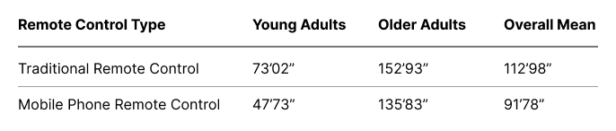
As more features are introduced, some interactions become more user-friendly on a smartphone. Voice of the Customer feedback also highlighted practical reasons for using a phone as a remote, including not wanting to handle both a phone and a physical remote, losing the physical remote, or having a broken one. These observations led us to explore a mobile remote app as an alternative way to interact with the projector.
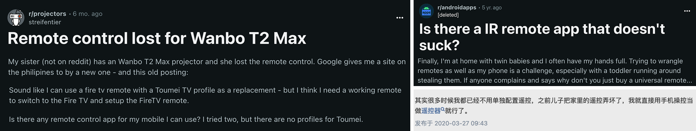
Google’s built-in solutions, including Google TV and Google Home, provide basic remote functionality but have limitations in projector-specific features and support.
Meanwhile, user reviews of a direct competitor’s remote app highlighted the value of mobile control, particularly for interactions such as projection adjustment, text input, and navigation.
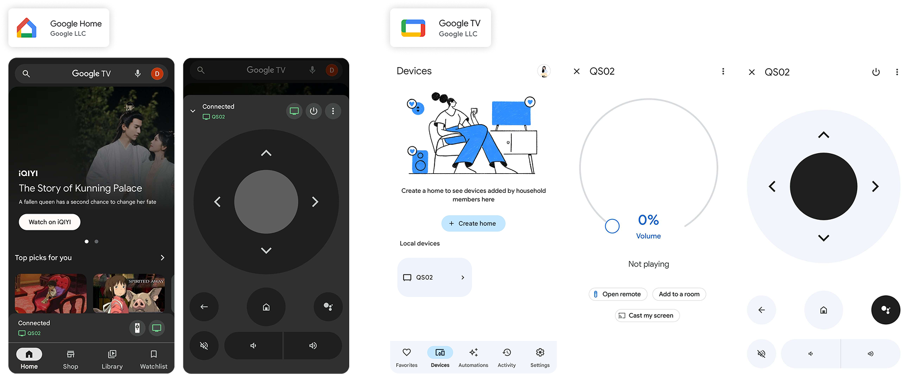

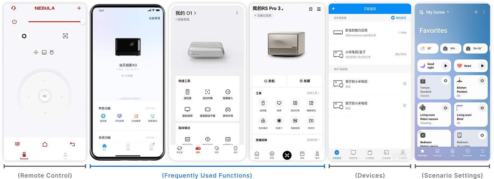
Most competitor landing pages allow users to directly access key projector functions. Their interfaces can be broadly categorized into three types: Remote Control, Common Functions, and Scenario Settings. Among these, Common Functions offer a balance between user needs and brand strategy, providing opportunities to reinforce brand identity. The study also observed that most indirect competitors adopt this approach for their landing pages.

Most are designed with a simple and intuitive layout, allowing users to quickly get started while minimizing accidental inputs. Only frequently used controls are shown upfront, while other functions are typically tucked into menus or placed on separate tabs.
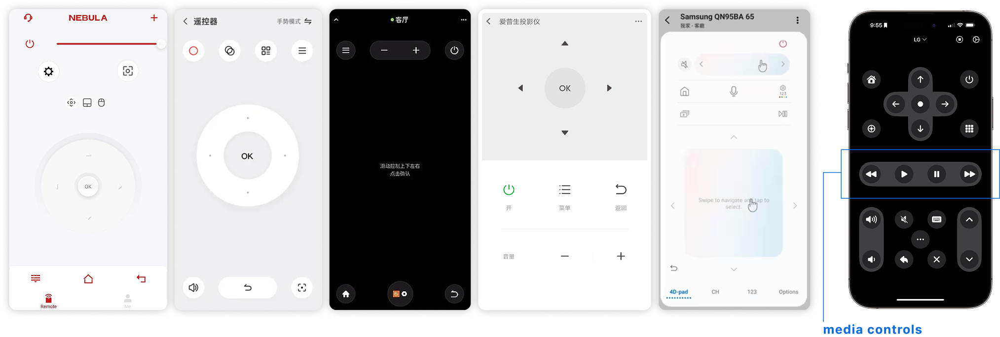
Third-party remote apps provide dedicated media controls, allowing users to quickly control playback—such as previous/next, fast-forward, rewind, and play/pause—without needing to first locate the current focus.

In addition to basic projector functions, most competitors also provide two major categories: Distinctive Applications and Support Resources. Distinctive Applications address the needs of target audiences and create opportunities for differentiated experiences. Support Resources can help brands collect user insights to optimize their products, while also serving broader business goals, such as strengthening customer service and enabling more targeted marketing.
Mobile apps from competitors with a strong market presence focus on projector control while offering additional value through extended applications, tutorials, customer support, and more. This helps create a continuous user experience, allowing users to address their projector-related needs directly through their phones.
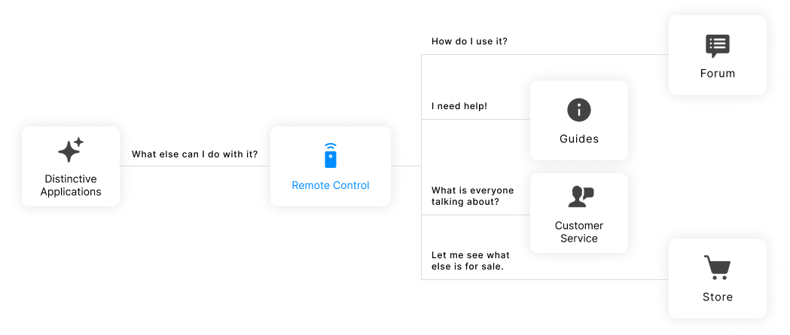
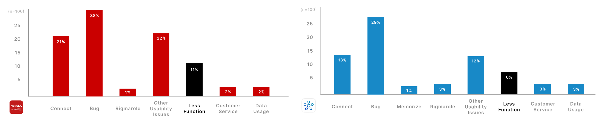
Three key findings emerged from an analysis of negative Voice of the Customer entries across the Nebula and Samsung apps (N=200):
Following cross-team discussions and brainstorming, we developed the value proposition and defined the following key features for the first model to adopt the app, the GV50.

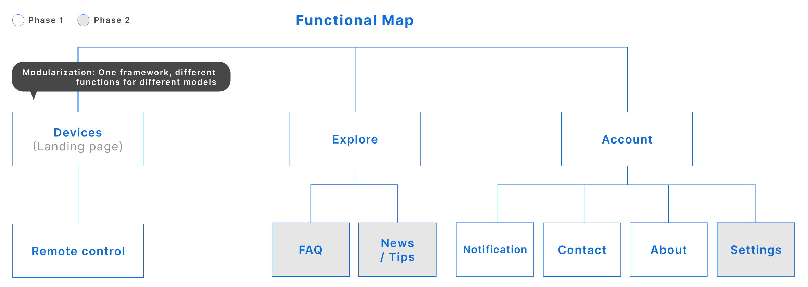
Maintain consistency across the BenQ portable projector experience, aligning the app with the model-specific physical remote, OSD, and built-in software, while also ensuring a consistent experience across different projector models.
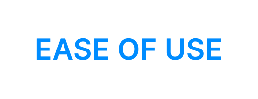
For To C users, the design should help them reach their goals quickly, with clear and intuitive navigation throughout the experience.
Keep the interface clean and straightforward, so users can operate the projector without constantly looking at their phone screen.
We decided to divide the product design into two phases, as the longer development timeline required for the Scenario Settings feature would not align with the GV50’s launch schedule. The first phase focused on essential user needs, with the initial app interface designed for the GV50.
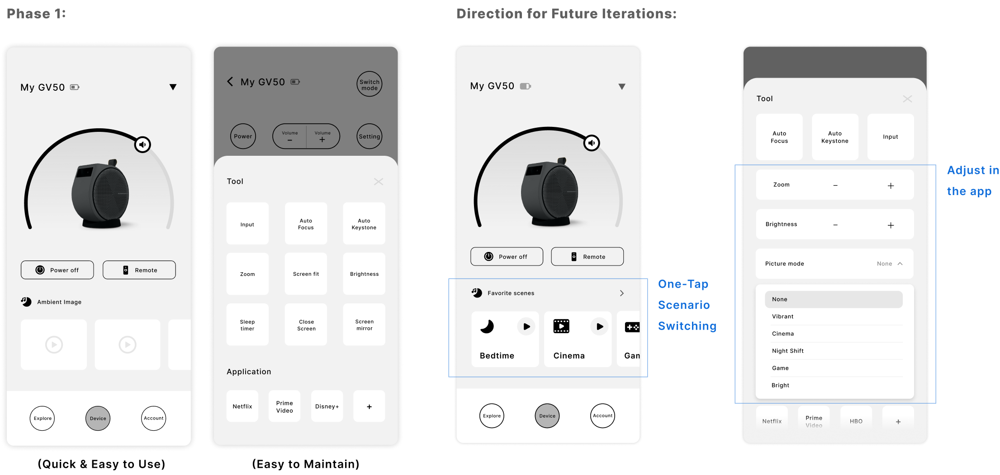
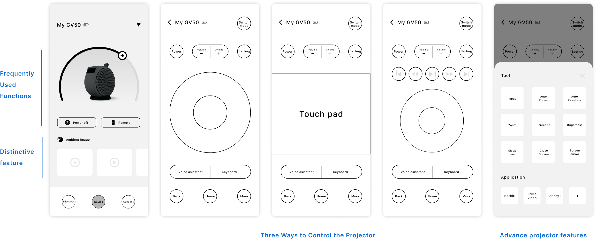
We developed a high-fidelity prototype based on the wireframes and conducted usability testing using the Wizard of Oz method.
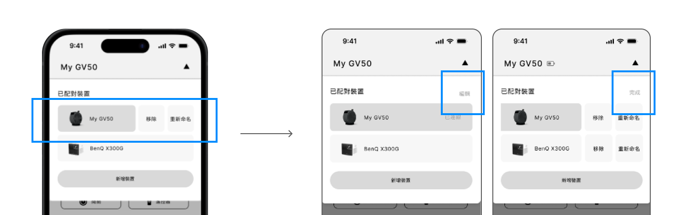
The swipe-left gesture is retained, while an “Edit” button is added in the top-right corner, allowing users to access options to remove or rename devices with a tap.
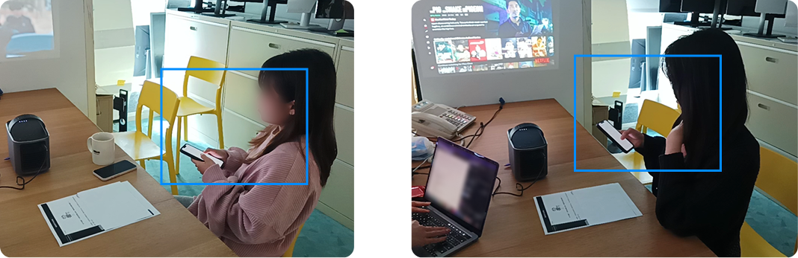
Move the frequently used “Back” and “Home” buttons closer to the D-pad.
“There are too many remotes, and I’m used to controlling digital products with my phone.”
“Paper warranty cards and manuals can easily get lost, so having an app would be convenient.”
“Most apps require Google sign-in, so I’d want to download the app for text input.”
Participants had previously used mobile remote apps for reasons such as not being able to find their physical remote, not wanting to reach for it, or using the keyboard feature. When asked, most participants said they would be willing to download the Smart Remote app for similar reasons if they purchased the projector.
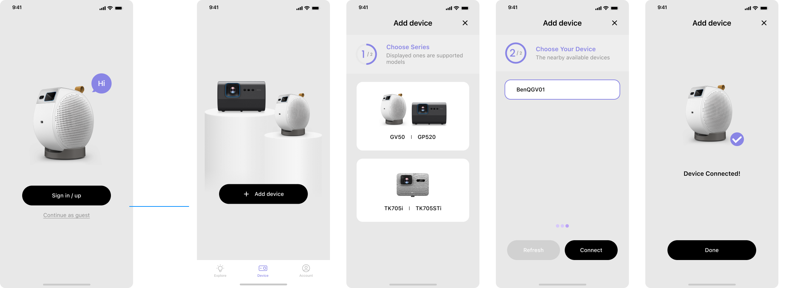

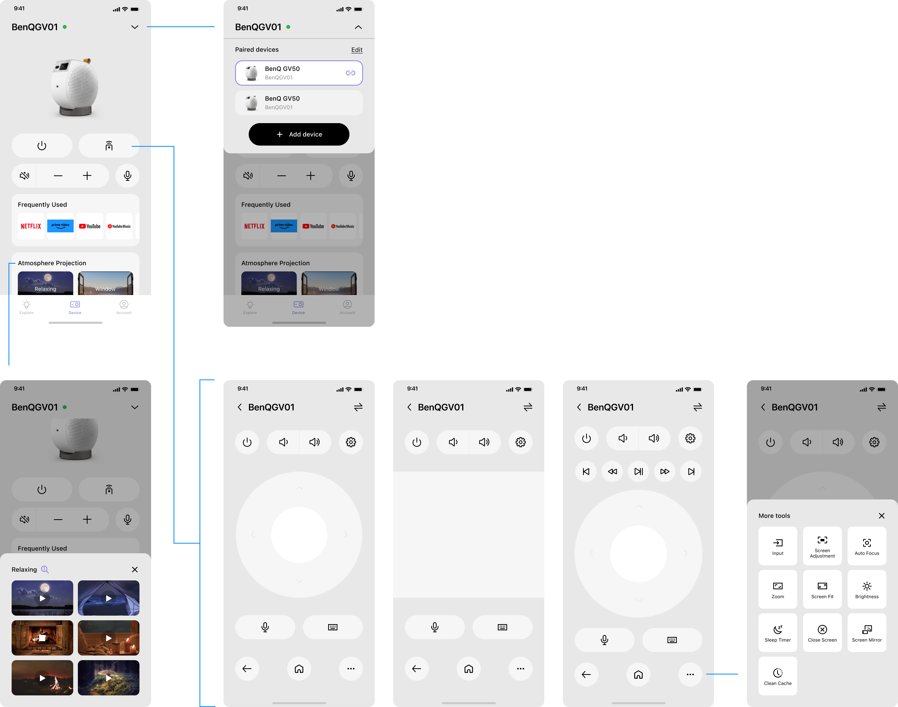


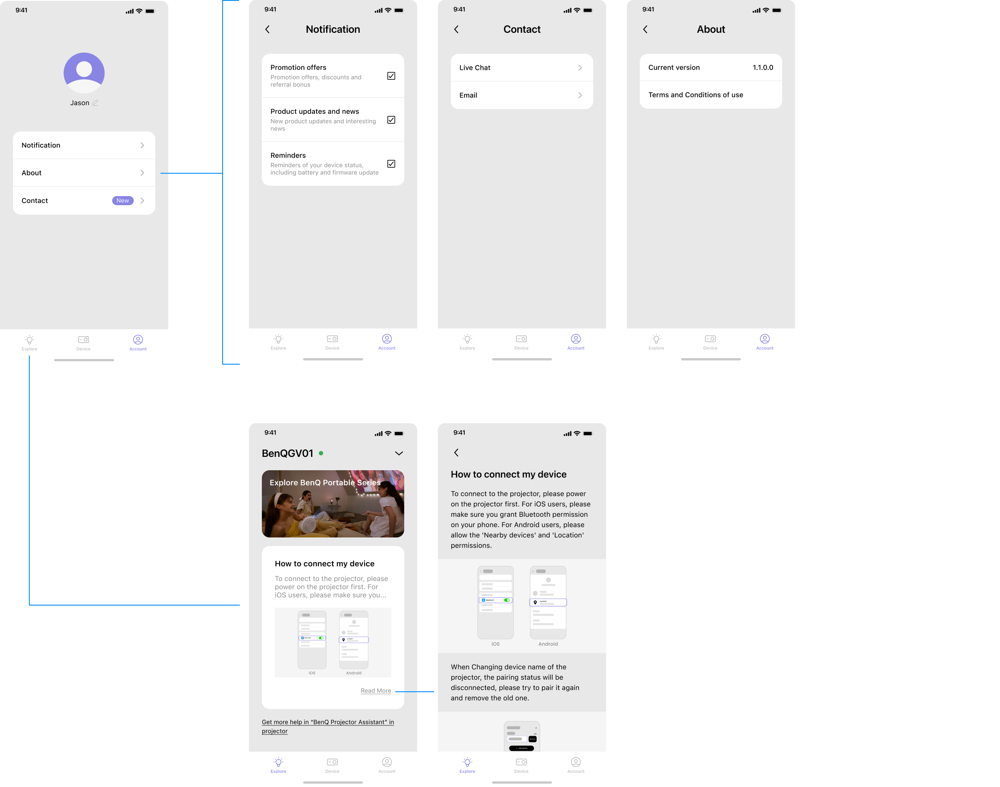
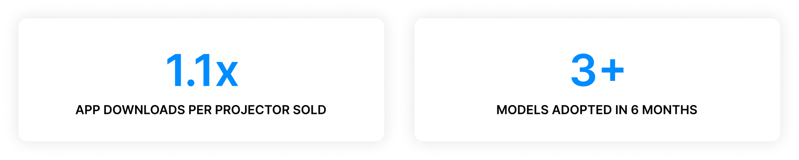
The remote control app was downloaded approximately 1.1 times the number of projectors sold. Within six months of the first version of the app being launched, three or more projector models had adopted the app.
As an ongoing touchpoint with users, the app helps the team better understand user behavior, provide more comprehensive customer support, and strengthen long-term brand engagement. From a product perspective, these insights also help us optimize the product and better meet user needs.
I also established the foundations of a design system for the BenQ app, improving interface consistency and supporting future iterations.